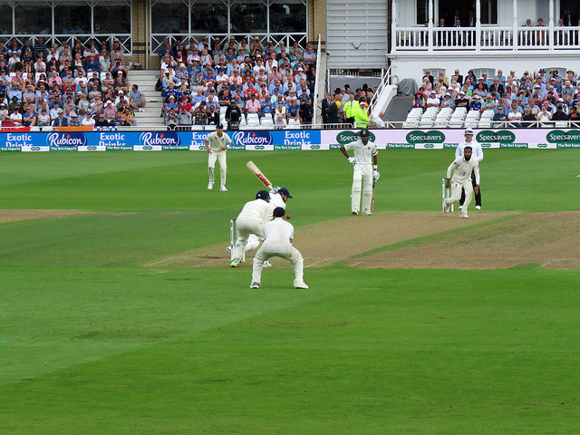
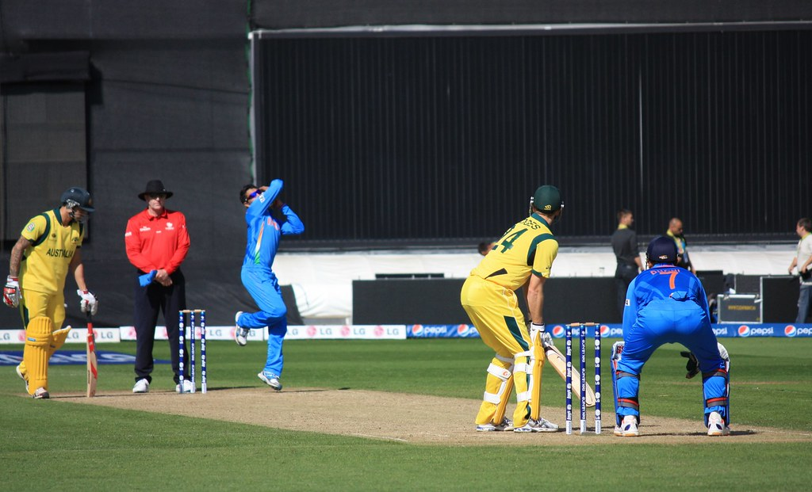
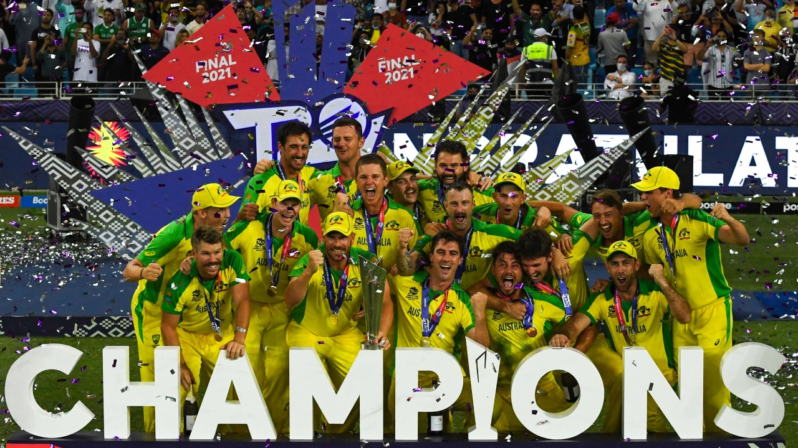

The Three Fomats of Cricket
Cricket is a sport that is enjoyed by millions of people worldwide. It is played in three different formats: Test cricket, One Day International (ODI) cricket, and Twenty20 (T20) cricket. Each format has its own unique characteristics, rules, and strategies, making cricket an exciting and dynamic sport.
Test Cricket
Test cricket is the oldest and most traditional format of cricket. It is played over a period of five days, with each team batting and bowling twice. The aim is to score as many runs as possible while also trying to bowl the opposition out twice. Test cricket is considered the ultimate test of skill, patience, and endurance, as it requires a high level of mental and physical stamina. The game can be played on a variety of pitches, which can vary in their characteristics depending on the location and weather conditions.
One Day International (ODI)
One Day International (ODI) cricket is a shorter version of Test cricket, where each team gets to bat and bowl for a maximum of 50 overs each. The aim is to score as many runs as possible in the allotted overs, while also trying to restrict the opposition to a low score. ODI cricket is more fast-paced and exciting than Test cricket, as it requires teams to be aggressive and score quickly, while also trying to take wickets at regular intervals. The game is usually played on a pitch that is more conducive to batting, with high scores being common.
Twenty20 (T20)
Twenty20 (T20) cricket is the newest and most popular format of cricket. It is a fast-paced game that is played over a period of approximately three hours, with each team batting and bowling for a maximum of 20 overs. The aim is to score as many runs as possible in the allotted overs, while also trying to restrict the opposition to a low score. T20 cricket is known for its high scoring and aggressive style of play, as teams try to score as many runs as possible in a short period of time. The game is played on a pitch that is even more conducive to batting, with very high scores being common.
Each format of cricket requires different skills, strategies, and tactics. In Test cricket, teams need to have a strong batting lineup that can occupy the crease for long periods of time, while also having a varied bowling attack that can take wickets on a variety of pitches. In ODI cricket, teams need to be able to score quickly and also maintain a good run rate throughout the innings, while also having a disciplined bowling attack that can restrict the opposition. In T20 cricket, teams need to be very aggressive and score as many runs as possible in a short period of time, while also having a bowling attack that can take wickets regularly and restrict the opposition.